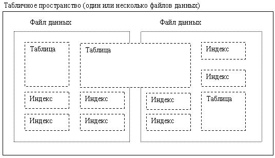
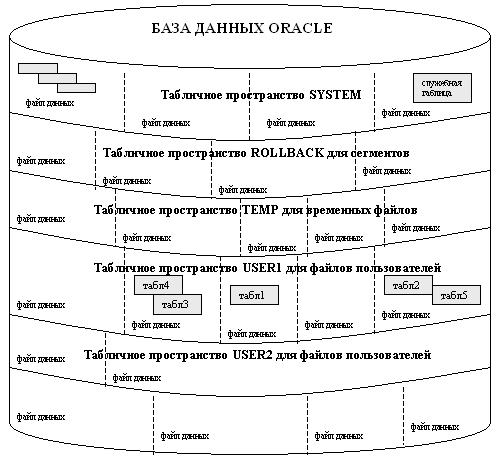
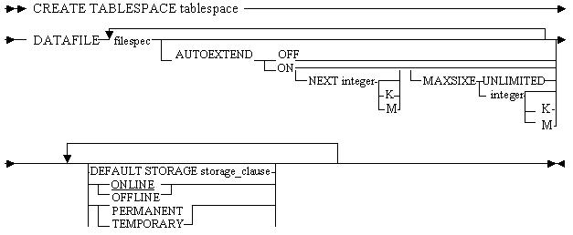

Табличные пространства и файлы данных
Кроме рассмотренных выше способов физического распределения памяти под логические объекты БД, стоит отметить, что на самом верхнем уровни физическое представление БД следующее:
- файлы данных - хранят собственно данные БД (его структура - коммерческая тайна);
- файл контрольных точек - хранит управляющую информацию, необходимую для работы процессов Oracle (см. тему "Физическая и логическая структура Oracle");
- файлы журнала повторения работы (или журналы повтора, журналы транзакций) - хранят незавершенный транзакции;
- файл настроек ( INIT . ORA ) - управляющий файл, который хранит все параметры запуска БД Oracle .
База данных ORACLE составлена из одного или и табличные нескольких единиц логической памяти, называемых табличными пространствами.
Таким образом, используемые данные базы данных ORACLE логически хранятся в табличных пространствах, а физически располагаются в файлах данных, ассоциированных с соответствующим табличным пространством. Рисунок 4 иллюстрирует эту взаимосвязь.

Рисунок 4 - Файлы данных и табличные пространства
Таким образом, файлы данных - физические структуры, каждая из которых связана с одним табличным пространством. Объекты БД (таблицы, индексы и т.п.) хранятся в табличных пространствах, и могут располагаться в нескольких файлах данных.
Все данные базы данных хранятся в табличных пространствах этой базы данных.
Каждое табличное пространство базы данных ORACLE пространства составлено из одного или нескольких файлов данных.
Файлы данных табличного пространства физически хранят соответствующие данные базы данных на диске.
Данные базы данных в совокупности хранятся в файлах данных, из которых состоит каждое табличное пространство этой базы данных (см. рис. 5).

Рисунок 5 - Физическая структура базы данных Oracle
Например, простейшая база данных ORACLE могла бы иметь одно табличное пространство с одним файлом данных. Более сложная база данных могла бы иметь три табличных пространства, каждое из которых состоит из двух файлов данных (что в совокупности дает шесть файлов данных).
Следующая команда позволяет создать табличное пространство:
CREATE TABLESPACE
Для выполнения оператора необходимы полномочия CREATE TABLESPACE .
Табличное пространство SYSTEM должно содержать не менее двух сегментов отката, включая сегмент отката SYSTEM .
Синтаксис команды созданиия табличного пространства
Синтаксис команды созданиия табличного пространства показан на рисунке 6.

Рисунок 6 - Синтаксис команды созданиия табличного пространства
Ключевые слова и параметры:
- DATAFILE - указывает один или несколько файлов данных, образующих создаваемое табличное пространство.
- AUTOEXTEND - разрешает или запрещает автоматическое увеличение файлов данных.
- OFF - режим запрета автоматического расширения файлов данных. При этом значения параметров NEXT и MAXSIZE обнуляются. Если в дальнейшем потребуется разрешить автоматическое расширение файлов данных, то это можно установить оператором ALTER TABLESPACE AUTOEXTEND , установив новые значения параметров NEXT и MAXSIZE .
- NEXT - размер дискового пространства, добавляемого при необходимости каждый раз в режиме автоматического увеличения дискового пространства. Этот параметр иногда называется экстентом ( extent ).
- MAXSIZE - максимальный размер дискового пространства, которое можно выделить под файл данных.
- UNLIMITED - устанавливает неограниченный размер дискового пространства, выделяемого под файл данных.
- DEFAULT STORAGE - определяет для всех объектов, создаваемых в табличном пространстве, значения параметром хранения по умолчанию.
- ONLINE - устанавливает для данного табличного пространства оперативный режим, который позволяет использовать его сразу после создания.
- OFFLINE - устанавливает для данного табличного пространства автономный режим, делающий его недоступным для использования.
- Отметим, что режим функционирования табличного пространства можно изменить оператором ALTER TABLESPACE . Установленные режимы хранятся в словаре данных в виде DBA _ TABLESPACES .
- PERMANENT - определяет, что табличное пространство будет использоваться для хранения постоянных объектов.
При создании объекта схемы, такого как таблица или индекс, создается сегмент этого объекта в табличном пространстве базы данных. Например, предположим, что таблица создается в указанном табличном пространстве с помощью команды CREATE TABLE с опцией TABLESPACE. Пространство для сегмента данных этой таблицы распределяется в одном или нескольких файлах данных, составляющих это табличное пространство. Сегмент объекта может размещаться лишь в одном табличном пространстве базы данных.
Администратор базы данных может использовать табличные пространства для:
- управления распределением памяти для объектов базы данных;
- установления квот памяти для пользователей базы данных;
- управления доступностью данных путем перевода отдельных табличных пространств в состояния online или offline;
- копирования и восстановления данных;
- распределения данных по устройствам для повышения производительности.
АБД может создавать новые табличные пространства, добавлять и удалять файлы данных из табличных пространств, устанавливать и изменять умалчиваемые характеристики пространства для сегментов, создаваемых в табличном пространстве, а также удалять табличные пространства.
Табличное пространство SYSTEM
Каждая база данных ORACLE содержит табличное пространство SYSTEM, которое создается автоматически при создании базы данных. Табличное пространство SYSTEM всегда содержит таблицы словаря данных для всей базы данных. Небольшой базе данных может оказаться достаточным одного табличного пространства SYSTEM; однако рекомендуется создать по меньшей мере одно дополнительное пространство, чтобы хранить данные пользователей отдельно от информации словаря данных. Это позволит вам более гибко осуществлять разнообразные операции администрирования, а также уменьшит соперничество за одни и те же файлы данных между объектами словаря и объектами схем.
Табличное пространство SYSTEM должно всегда находиться в состоянии онлайн и не может быть переведено в офлайн. Все данные, хранящиеся от имени хранимых программных единиц PL/SQL (процедуры, функции, пакеты и триггеры), размещаются в табличном пространстве SYSTEM. Если для базы данных создается много таких объектов, то АБД должен спланировать память, которая будет занята в табличном пространстве SYSTEM под эти объекты.
Распределение дополнительного пространства для базы данных
Чтобы расширить базу данных, к одному из существующих в ней табличных пространств можно добавить второй файл данных, тем самым, увеличив величину дисковой памяти, распределенной для соответствующего табличного пространства.
Размер базы данных и размеры табличных пространств увеличиваются с добавлением новых файлов данных. Альтернативно, АБД может создать новое табличное пространство (определяемое дополнительным файлом данных), чтобы увеличить размер базы данных.
Размер табличного пространства - это размер его файла данных или суммарный размер всех файлов данных, составляющих это табличное пространство. Размер базы данных - это общий размер всех табличных пространств, составляющих базу данных.
Онлайновые и офлайновые табличные пространства
АБД может перевести любое табличное пространство в базе данных ORACLE в состояние онлайн (т.е. доступно) или офлайн (недоступно), если база данных открыта. Единственным исключением является то, что табличное пространство SYSTEM всегда находится в онлайне, ибо словарь данных должен быть всегда доступен ORACLE. Обычное состояние табличного пространства - онлайн, так что данные, содержащиеся в нем, доступны пользователям базы данных.
Однако администратору может понадобиться перевод табличного пространства в офлайн по одной из следующих причин:
- чтобы сделать часть базы данных недоступной, сохраняя в то же время нормальный доступ к остальной части;
- чтобы выполнить резервное копирование офлайнового табличного пространства (хотя такое копирование можно осуществлять и в онлайне, одновременно с использованием табличного пространства);
- чтобы сделать приложение вместе с его группой таблиц временно недоступным на время обновления или сопровождения этого приложения.
Когда табличное пространство переводится в офлайн, ORACLE не позволяет последующим предложениям SQL обращаться к объектам этого табличного пространства. Активные транзакции с уже выполненными предложениями, обращавшимися к данным в переведенном в офлайн табличном пространстве, не затрагиваются на уровне транзакции; однако данные отката, соответствующие таким предложениям, сохраняются в отсроченном сегменте отката (в табличном пространстве SYSTEM) и будут применены к табличному пространству, если потребуется, когда оно будет переведено в онлайн. Табличное пространство не может быть переведено в офлайн, если оно содержит активные сегменты отката. Табличное пространство может быть переведено в офлайн лишь в том случае, если все сегменты отката, содержащиеся в нем, не используются.
В словаре данных (в табличном пространстве SYSTEM) отмечается, переведено ли пространство в онлайн или в офлайн. Если табличное пространство было в состоянии офлайн в момент закрытия базы данных, оно будет в том же состоянии и при последующем монтировании и открытии базы данных. Табличное пространство может быть переведено в онлайн только той базой данных, которой оно переводилось в офлайн, поскольку необходимая информация словаря данных находится в табличном пространстве SYSTEM этой базы данных. Табличное пространство в состоянии офлайн не может читаться и редактироваться никакой другой утилитой, кроме ORACLE. Таким образом, табличные пространства не могут передаваться из одной базы данных в другую. При возникновении некоторых ошибок табличное пространство может автоматически переводиться в состояние офлайн (например, если системный процесс DBWR не сумел записать данные за несколько попыток). Пользователи, пытающиеся работать с таблицами этого пространства, получат сообщение об ошибке. Если эти проблемы вызываются сбоем носителя, то после исправления ошибки оборудования должно быть проведено восстановление табличного пространства. При использовании нескольких табличных пространств для разграничения различных типов данных, АБД может также переводить некоторые из табличных пространств в офлайн для некоторых процедур сопровождения, в то время как остальные табличные пространства остаются в онлайне и их информация доступна для работы. Однако при переводе табличных пространств в онлайн могут возникнуть особые обстоятельства.
Например, если для отделения данных таблиц от их индексов используются два табличных пространства, то справедливо следующее:
- Если табличное пространство, содержащее индексы, переведено в офлайн, то запросы по-прежнему могут обращаться к данным, потому что наличие индексов для запросов не обязательно.
- Если в офлайн переведено табличное пространство, которое содержит таблицы, то данные этих таблиц недоступны, и, следовательно, запросы не могут быть выполнены.
В общем, если ORACLE определяет, что в онлайновых табличных пространствах достаточно информации для выполнения предложения, он выполняет его. Если необходимы данные из офлайнового табличного пространства, предложение возвратит ошибку.
Файлы данных
Табличное пространство в базе данных ORACLE состоит из одного или нескольких физических файлов данных.
Файлы данных, ассоциированные с табличным пространством, хранят все данные этого табличного пространства. Любой файл данных может ассоциироваться только с одним табличным пространством и только с одной базой данных. При создании файла данных для табличного пространства ORACLE распределяет ему указанное количество дисковой памяти. Когда файл данных создается, операционная система несет ответственность за очистку старой информации и за установку должных режимов доступа к файлу, прежде чем он будет распределен ORACLE. Если файл велик, этот процесс (очистка) может потребовать значительного времени. Поскольку первым табличным пространством в любой базе данных всегда является SYSTEM, первые файлы данных любой базы данных автоматически распределяются табличному пространству SYSTEM во время создания базы данных.
Содержимое файла данных
После первоначального создания файла данных соответствующее дисковое пространство еще не содержит никаких данных; однако это пространство зарезервировано за будущими сегментами ассоциированного табличного пространства - оно не может содержать каких-либо иных (чужих) данных. Когда сегмент (например, сегмент данных таблицы) будет создан и начнет увеличиваться в размерах, ORACLE использует свободное место в соответствующих файлах данных, чтобы распределять экстенты для этого сегмента. Данные в сегментах объектов (сегментах данных, сегментах индексов, сегментах отката и т.д.) в табличном пространстве физически хранятся в одном или нескольких файлах данных, составляющих это табличное пространство. Заметьте, что объект схемы не соответствует определенному файлу данных; скорее, файл данных является хранилищем данных любого объекта в конкретном табличном пространстве. Экстенты одного сегмента могут быть распределены в нескольких файлах данных табличного пространства; таким образом, объект может "занимать" один или несколько файлов данных. Обычно АБД и пользователи не могут контролировать, в каких файлах данных размещается объект.
Офлайновые файлы данных
Табличные пространства в любой момент можно переводить в офлайн (т.е. делать недоступными) или в онлайн (делать доступными). Поэтому все файлы данных, составляющие табличное пространство, переводятся в офлайн или онлайн одновременно, всей группой.
Индивидуальные файлы данных также могут быть переведены в офлайн; однако это обычно делается лишь при некоторых процедурах восстановления базы данных.